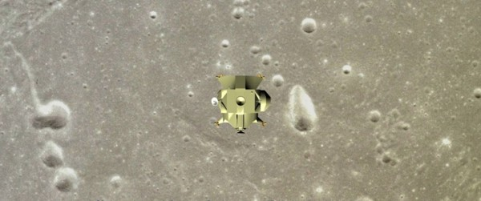

"A 3D effect"
Есть идея сделать по этому сценарию анимационный фильм. Соответственно, ищу инвестора и продюсера.
Более подробно о проекте читайте здесь.
Научно-фантастический фильм
Действующие лица: Фриц – пилот NASA, Джон – интегральный врач и биолог-исследователь, Владимир – русский 3D специалист (его задача – обеспечить эффектную 3D трансляцию с Марса).
Джон заходит домой к Фрицу, который смотрит объёмный телеканал.
- Ну что, опять смотришь объёмный телеканал?
- Да. Объёмное телевидение - это интересная вещь, иногда прямо очень объёмно показывают. Зря не смотришь. Надо больше отдыхать, развлекаться. А то всё тренировки, да тренировки – некогда посмотреть телевизор...
- А никто тебе в этом не виноват. Если хочешь быть "номером один", то терпи.
- Да, ты прав - это результат выбора, который я делаю постоянно. Ты же знаешь, я поставил себе цель в жизни, и обязательно этой цели добьюсь. Конечно, моя жизнь – это каторга, но я каждый день выбираю такую жизнь вновь и вновь. Если я могу действовать – я действую. Потому что хочу быть самим собой.
- Вот-вот! Типичный пример маниакальной целеустремлённости. Что - съел?
- Ладно... Вот ты всё знаешь – скажи, почему в кинотеатрах все фильмы 3D, и только один телеканал вещает в объёме?
- Причина, наверно, в монополизации экономики. Общенациональная Вещательная Компания подмяла под себя все 3D каналы. Вообще, мало хороших специалистов.
- А куда антимонопольная комиссия смотрит?
- Ну во-первых, они тоже любят смотреть этот канал, а во-вторых, ОВК попадает под действие поправки о эффективно работающих монополиях. В общем, не нашлось никого, кто бы подал на них в суд.
- Понятно…
- Я, в общем-то, зашёл поздравить тебя с назначением командиром экипажа.
- Официально ещё не объявлено, откуда информация?
- Ты же знаешь, у меня свои каналы информации, я всё знаю. Вопрос решённый, говорю тебе. И ещё, тот же секретный источник сообщает, что нам навязывают "космического туриста", а если точнее, русского 3D специалиста. Это политическое решение, его задача – обеспечить 3d–трансляцию с Марса. Только здоровье у него – дерьмо, поэтому для меня это дополнительная проблема. Что скажешь?
- Я не люблю русских, это гибнущая цивилизация, ненавидящая всё живое…
- Это всё штампы Голливуда, эта цивилизация в таком культурном состоянии как минимум последние 1000 лет. Нельзя, конечно, так жить, но раз они живут, значит можно… Кстати, мы полетим на русском корабле и поэтому я рекомендую тебе держать язык за зубами, с русским лишнего не болтай. Он на днях прилетел из Москвы, поехали знакомиться с ним.
- Подожди, дай выпью чашечку чая и съем бутерброд. Тут как раз входит жена-француженка с подносом, на котором чайник, чайные чашки и бутерброды.
- По пути мы будем должны посетить лунную базу, это обязательный элемент нашего шоу. Думаю, тебе интересно будет взглянуть на это чудо света своими глазами.
- Зачем русские вообще её построили? – спрашивает Фриц, пережёвывая бутерброд. Радиотелескоп может прекрасно действовать в автоматическом режиме. Зачем они сделали обитаемую базу, да ещё с "пузырём"?
- Они всё правильно сделали – свернули своё присутствие в Антарктиде и развернули своё присутствие на Луне. Ненамного дороже, зато намного эффектней. Ты же знаешь, последний экономический кризис вновь поставил под вопрос эквивалентное содержание доллара. Приходится постоянно преодолевать кризис доверия. Если по сути, то структура мировой экономики такова: американские заводы печатают деньги, а русские заводы делают космические корабли. Китайские заводы штампуют всё остальное. После того, как китайцы запустили свою орбитальную станцию, стало понятно, что Россия и Америка утрачивают своё лидирующее положение в космосе. Чтобы получать хорошую зарплату, надо быть первым на Земле, а чтобы быть первым на Земле, надо быть первым в космосе. Поэтому мы тратим большие деньги на космическую программу - это выгодный бизнес. Что движет русскими – я не знаю. Наверное, осознание своего национального величия. Народ живёт в нищете, и при этом они первые в космосе, я не могу это понять.
- Да, я тоже. Ладно, поехали. Они выходят из дома, садятся в автомобиль и едут по дороге, по прямой автостраде. Едут по Аризонской пустыне, вдали по бокам виднеются горы.
Джон и Фриц приезжают в Американский космический центр имени Кеннеди. Их встречает сотрудник центра по имени Лари.
Полностью сценарий опубликован на обычной версии сайта http://www.teleport-1m.ru/rus_3.html

"Финальная сцена фильма":
 скачать
скачать ролик (147 MB)